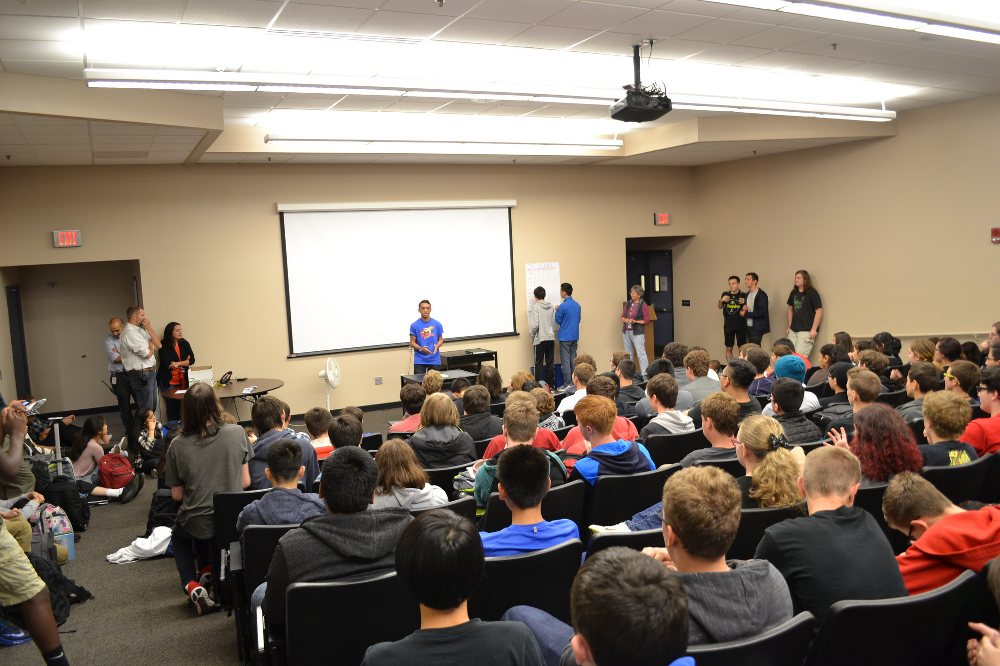

Community Outreach
Team 2898 The Flying Hedgehogs is activly involved in our community wether it is at the compettion or spreading awarness of FIRST & Robotics. At the competion it is not unusual to see a Hedgehogs team member helping other teams get their robot past inspections or debugging their robot code. In the offseson, team memebers partisipate in various activtites that include:
-
Robot Demonstraions at Oregon State capital to discuss FIRST
-
Farmer's Market Booth to demonstrate our robot and fundraise
-
Team members and mentors run workshops at FIRSTfare
